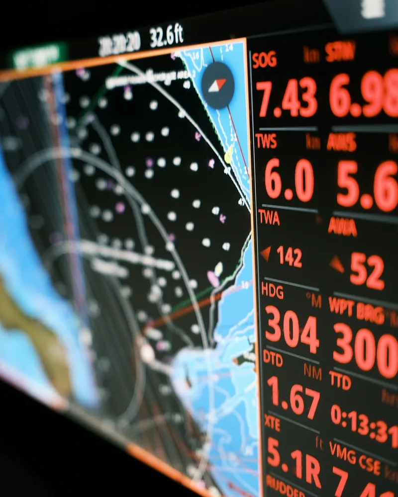

NMEA networks
Find the fault in the network—not by swapping parts.
Backbone power, termination, voltage, topology and device communication are checked as one system.
- 01NMEA 2000 backbone diagnostics and cleanup
- 02Displays, sensors, gateways and engine data integration
- 03Network commissioning and documented results
Live schematicScroll traces the backbone
